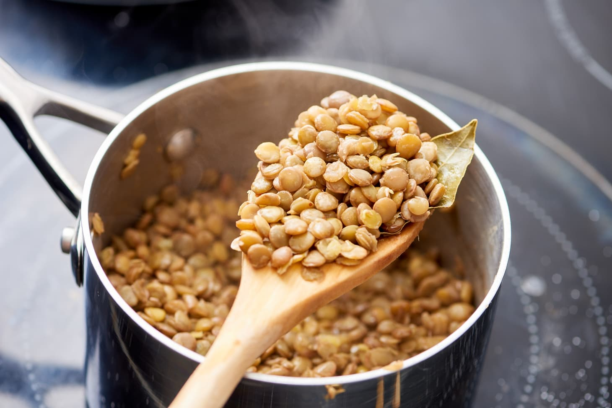

Molybdenum
Health Benefits:
- Promotion of Optimal Sulfur Balance
- Antioxidant Protection
- Nervous system metabolism
- Required in formation of unique proteins called amidoxime reducing component proteins, or mARC
Food Source:
- Lentils, Dried Peas, Lima Beans, Kidney Beans, Soybeans, Black Beans,
Pinto Beans, Garbanzo Beans, Green Peas
- Oats, Barley
- Tomatoes, Cucumber
- Romaine Lettuce, Celery, Carrots, Bell Peppers, Fennel
- Eggs
- Yogurt
- Peanuts, Sesame Seeds, Walnuts, Almonds
- Cod
